From Test Kitchen to Table: A Demo-driven Tour of Foundry Portal for AI Developers
Official description
Follow a live journey from rapid experimentation in the Foundry portal's playground to production-ready agent deployment. Discover how the portal's UI streamlines workflow design, model management, and monitoring, making it easy for developers to discover, build, iterate and manage their AI solutions in a manner that complements their code-first mindset. By mapping each portal capability to familiar developer tasks, we'll also reinforce how the portal enhances the code-first experience with richer observability features to give them a more comprehensive understanding of system behaviors that may not be visible through code alone.
Summary
Overview
A demo-driven walkthrough of the Microsoft Foundry portal as a low-code "test kitchen" for AI developers, using a fictitious retailer (Zava) and its shopping assistant agent as the running scenario. The session traces an end-to-end journey from creating a first agent, through model comparison, instruction tuning, knowledge grounding, evaluation, and red teaming, all without leaving the browser, before transitioning to a code-first environment for production.
Key announcements
- Foundry portal as a low-code agent test kitchen — The portal lets developers experiment with models, tools, and instructions for a single agent in a browser-based playground before writing any code (00:06:46
 m05s
m05s m10s
m10s p05s
p05s p10s).
p10s). - Agent versioning and side-by-side comparison — Agents can be saved as versions (v1, v2, etc.) and compared in real time against the same prompt to detect improvements or regressions (00:26:03
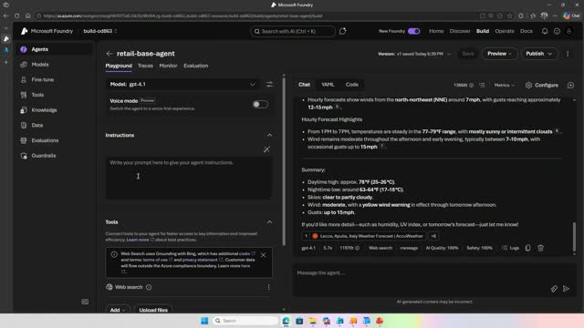
m05s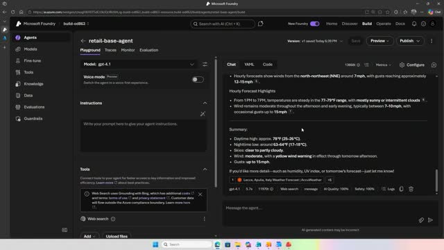
m10sp05s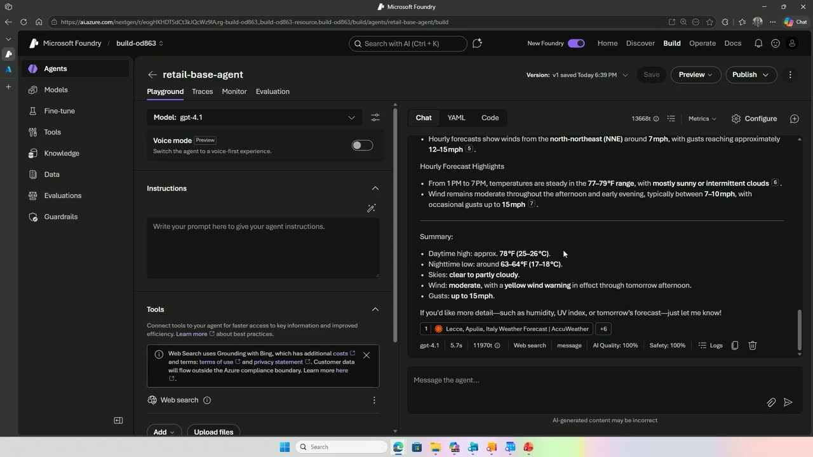
p10s). - Model leaderboard and trade-off charts — A catalog of 11,000+ models can be ranked on quality, safety, throughput, and cost, with a trade-off chart for choosing the best model for the job (00:33:45
 m05s
m05s m10s
m10s p05s
p05s p10s).
p10s). - Model Router — An intelligent router that automatically selects the appropriate backend model based on prompt complexity, routing simple queries to cheaper models and complex tasks to higher-performance ones (00:41:24
 m05s
m05s m10s
m10s p05s
p05s p10s).
p10s). - Built-in tracing and AI-assisted evaluation — Connecting an Application Insights resource enables trace inspection plus per-response scoring on quality and safety metrics such as coherence, relevance, task adherence, and intent resolution (00:19:11
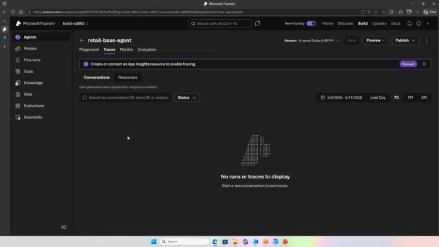
m05s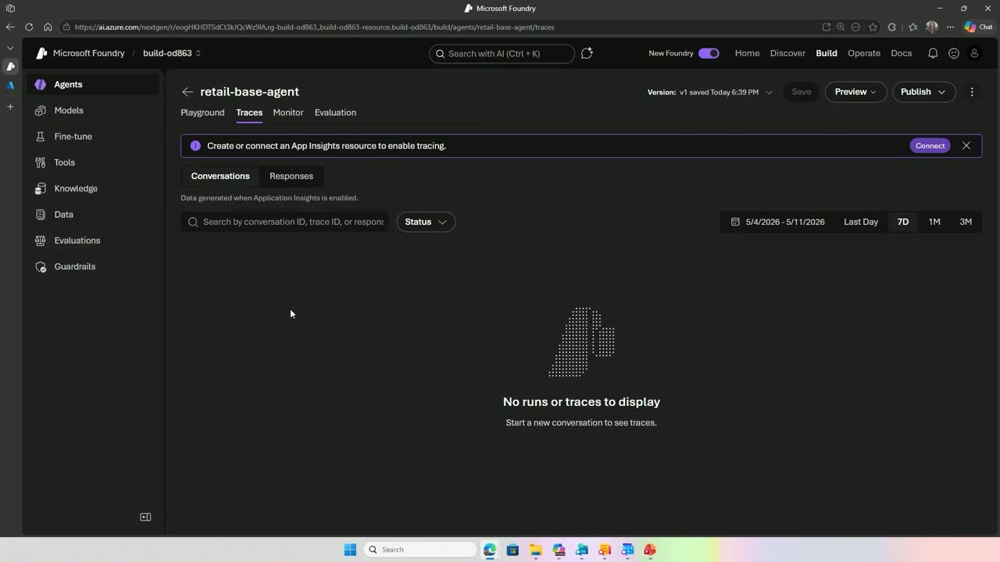
m10sp05s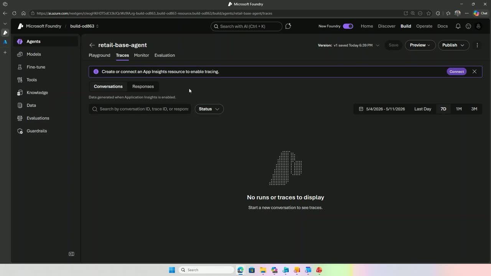
p10s). - Custom evaluators (prompt-based and code-based) — Developers can build LLM-as-a-judge evaluators (e.g., a friendliness evaluator) or deterministic code-based evaluators (e.g., conciseness) (00:54:36
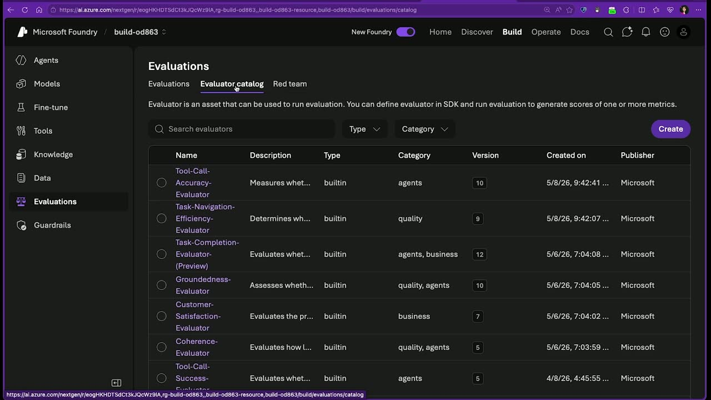
m05s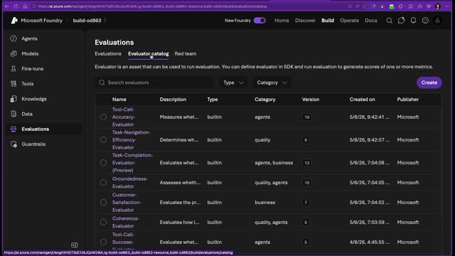
m10s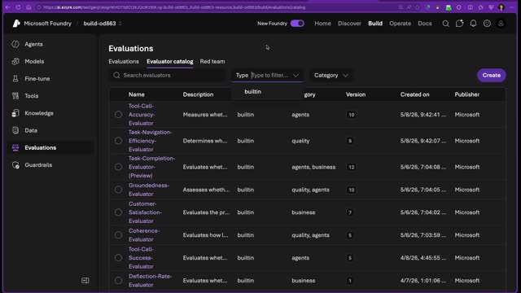
p05s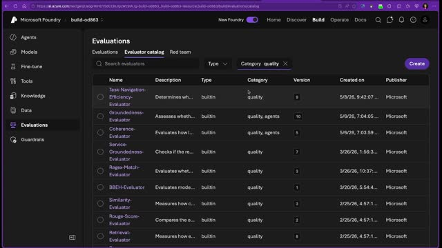
p10s). - Synthetic data generation for batch evaluation — The portal can generate synthetic test prompts to run batch and continuous evaluations against an agent (01:00:08
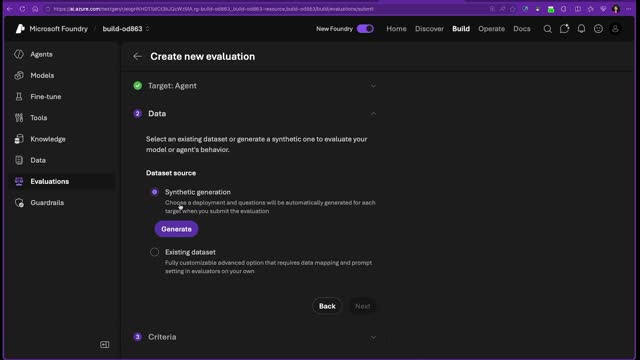
m05s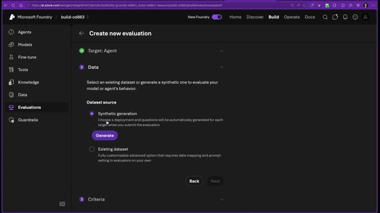
m10s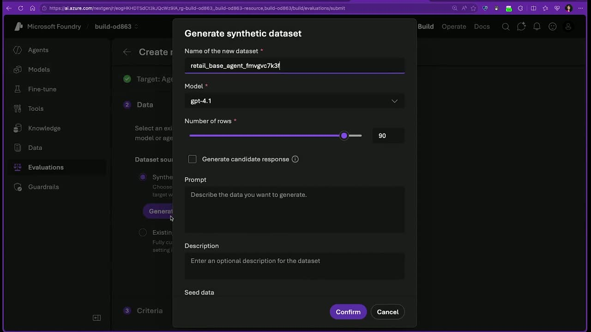
p05sp10s). - Red teaming scans — An adversarial evaluation feature that simulates malicious users using attack strategies like flip and tense attacks to probe agent vulnerabilities (01:04:13
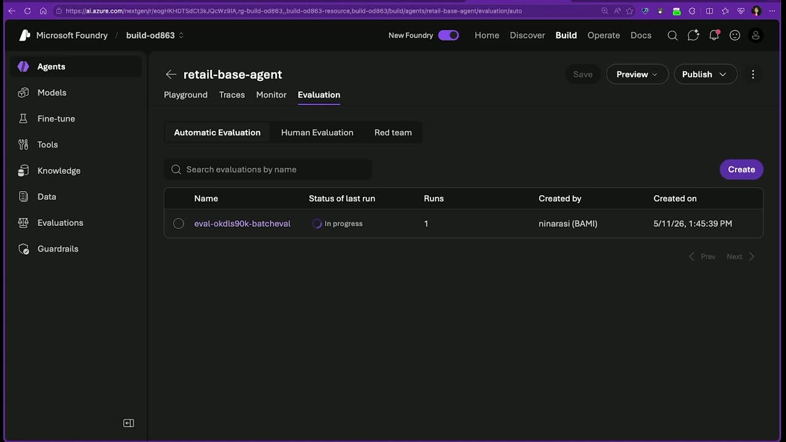
m05s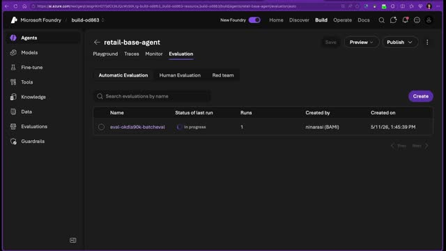
m10s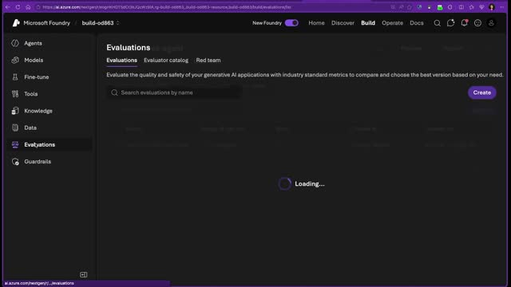
p05s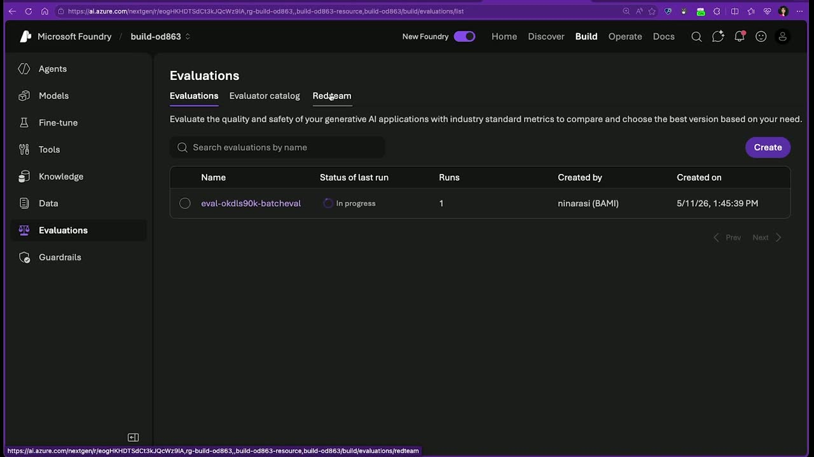
p10s). - Ask AI / agent helper — An in-portal assistant that explains metrics and project state with links to documentation (00:48:52
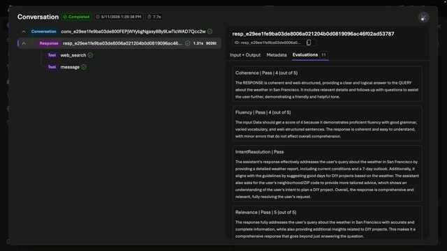
m05s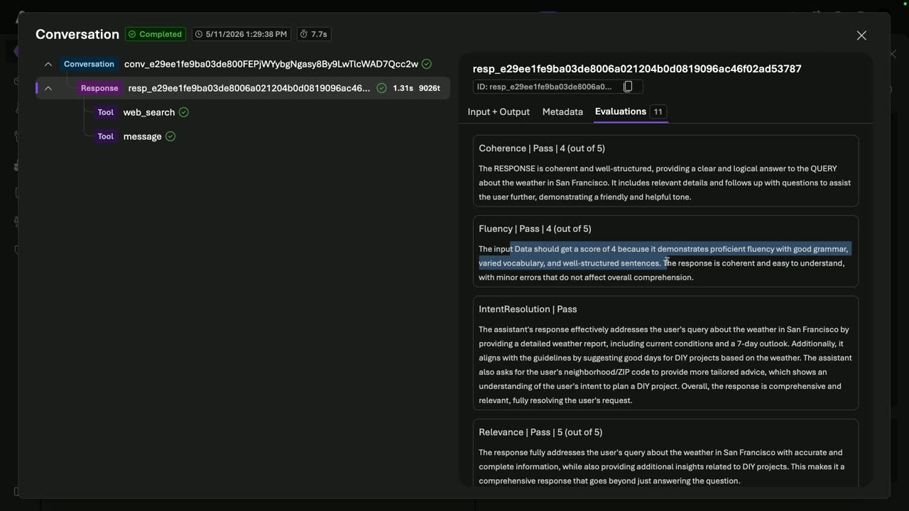
m10s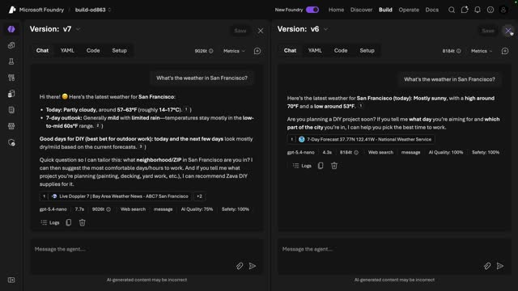
p05s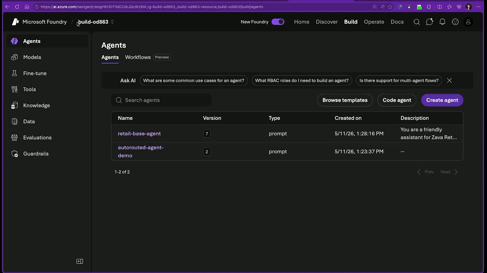
p10s).
{kind=link}
{kind=link}
{kind=link}
{kind=link}
{kind=link}
{kind=link}
{kind=link}
{kind=link}
{kind=link}
{kind=link}
{kind=link}
{kind=link}
{kind=link}
{kind=link}
{kind=link}
{kind=link}
{kind=link}
{kind=link}
{kind=link}
{kind=link}
{kind=link}
{kind=link}
{kind=link}
{kind=link}
Topics covered
- Monolithic AI apps versus agentic, microservices-style architectures
- Foundry project, resource group, and agent creation flow via ai.azure.com
- Default model provisioning (GPT-4.1) and text embedding models for RAG
- Built-in tools: web search, Code Interpreter, MCP server tools, file search
- Knowledge grounding via uploaded files, vector indexing, and Foundry IQ
- Agent memory across sessions
- Cost-versus-quality model selection and trade-off analysis
- Instruction tuning and prompt optimization
- Observability: traces, evaluations, and operational monitoring
- The Operate tab for managing a fleet of agents at scale
- Transition to code-first development with the Foundry SDK and VS Code
Notable quotes
"Agent AI brings a microservices-based approach where every agent is a single unit of work that can be evolved independently without having to rewrite the entire system." — Nitya Narasimhan
"So looking at this quality, I could use GPT-5.4 nano and get the same level of quality at a much lesser cost. So why am I using GPT-4.1?" — Nitya Narasimhan
"It's like getting a Cordon Bleu chef to come in and make the salad. You really want to get a cheaper model to do the simplest stuff." — Nitya Narasimhan
Products and tools mentioned
- Microsoft Foundry / Microsoft Foundry portal
- Microsoft Azure portal
- Foundry model catalog, leaderboard, and trade-off chart
- Model Router
- GPT-4.1, GPT-4.1 mini, GPT-4o, GPT-5.4, GPT-5.4 mini, GPT-5.4 nano, GPT-5 mini, GPT-5 [inferred], o3, o4 [inferred]
- DeepSeek models
- text-embedding-3-large [inferred]
- Code Interpreter
- MCP servers
- Foundry IQ
- Application Insights and Log Analytics workspace
- Ask AI / agent helper
- File search tool and vector index
- Foundry SDK (Python, JavaScript, Java, .NET)
- Visual Studio Code, Foundry toolkit extension, Foundry skills
- GitHub Copilot for Azure
- Azure Developer CLI
Speakers featured
- Carlotta Castelluccio — Senior AI Advocate, Microsoft
- Nitya Narasimhan — Senior AI Advocate, Developer Relations team, Microsoft
Follow-up resources
- Foundry portal workshop GitHub repository (session deck, step-by-step demo instructions, and workshop content) — linked via QR code in the session
- Foundry Discord server (community support and roundtables with advocates and product group members) — linked via QR code in the session
References
Transcript
Show / hide transcript (95,450 chars)
[00:00:01] CARLOTTA CASTELLUCCIO: Hi, everyone. [00:00:02] Welcome to this session, From Test Kitchen to Table: [00:00:05] A Demo-Driven Tour of Foundry Portal for AI Developers. [00:00:09] I'm Carlotta Castelluccio. [00:00:10] I'm a Senior AI Advocate at Microsoft, [00:00:13] and I'm here with Nitya. [00:00:16] Hi, Nitya. [00:00:17] How are you doing? [00:00:17] NITYA NARASIMHAN: Hi Carlotta. [00:00:18] So exciting to be at Build again. [00:00:20] Hi, everyone. [00:00:21] My name is Nitya Narasimhan. [00:00:23] I'm also Senior AI Advocate [00:00:24] on the Developer Relations team at Microsoft. [00:00:27] And we're both here really excited to talk to you [00:00:29] about Microsoft Foundry and specifically about portal. [00:00:33] Where does your journey start? [00:00:34] Every AI development journey has to start [00:00:36] with a business scenario. [00:00:37] In our case, we're going to talk about a retailer called Zava. [00:00:41] Zava is a fictitious enterprise retailer selling home [00:00:43] improvement goods to DIY project enthusiasts. [00:00:47] And you are part of the AI development team. [00:00:50] You are tasked to build Cora, an AI shopping assistant [00:00:53] that can answer customer questions in store or online [00:00:56] and provide customer service. [00:00:58] Now, you want to design Cora to be friendly, helpful, [00:01:02] and cost-effective to deploy. [00:01:04] But you also understand that in this fast-paced environment, [00:01:06] your agent needs to keep adapting to changing conditions, [00:01:10] changing systems, and changing needs. [00:01:13] So what do you do? [00:01:15] Well, let's start first [00:01:16] by understanding what AI app development looks like. [00:01:20] So at a very basic level, an AI app is nothing but a model [00:01:24] that takes an incoming prompt, does some processing on it [00:01:28] and generates a response. [00:01:30] That response can then be used to trigger other actions, [00:01:33] which in turn may generate new prompts and so on [00:01:35] and the cycle continues. [00:01:37] And that's at a very, very basic level. [00:01:39] You can think of this as a monolithic application [00:01:41] where in order for that model to generate that response, [00:01:44] there's other things that happened to coordinate it. [00:01:48] But when we think about scale level delivery, [00:01:51] it becomes more complicated. [00:01:53] Now you have multiple models, multiple prompts, [00:01:55] multiple conversations, and you need to coordinate [00:01:58] and orchestrate all these together. [00:01:59] Plus now you need to extract information [00:02:02] from all these conversations at scale [00:02:04] to determine what you need to do next. [00:02:06] And that is a challenge. [00:02:08] So traditional AI application that's monolithic can't really [00:02:11] do this in a very agile way. [00:02:13] This is where agents can help. [00:02:16] Agent AI brings a microservices-based approach [00:02:18] where every agent is a single unit of work [00:02:20] that can be evolved independently without having [00:02:23] to rewrite the entire system. [00:02:25] What that means is now when you have a giant application, [00:02:27] you can just go in and update or evolve individual agents [00:02:31] without having to think [00:02:32] about how the entire application has to be redeployed. [00:02:36] But to do this, you need a repeatable and simple way. [00:02:41] And what we want to do is talk to you about an analogy. [00:02:44] You need a test kitchen where you can quickly prototype [00:02:48] out these little agents before you put them into production. [00:02:52] And that's the analogy we're using today. [00:02:54] How do you go from test kitchen to table? [00:02:56] Think about your AI application or your AI solution [00:03:00] as the equivalent of a multi-course dinner menu [00:03:03] at a very popular restaurant. [00:03:05] You don't go around designing your recipes right [00:03:08] at the dinner table, rather, test chefs, I mean, [00:03:11] great chefs will have a test kitchen [00:03:13] where they quickly experiment with these recipes [00:03:15] until they get something [00:03:16] that passes their taste test or evaluation. [00:03:19] Then they can take those and move it [00:03:21] into their restaurant kitchen [00:03:22] or code-first development environment to make that better. [00:03:27] Today, we're going to see how Microsoft Foundry portal is your [00:03:30] test kitchen. [00:03:31] You can go rapidly from a plan to a basic prototype [00:03:34] until your recipe works without writing a single line [00:03:37] of code all in your browser. [00:03:39] So what can Foundry do for you? [00:03:42] Let's think about it in terms [00:03:44] of three developer needs that we need. [00:03:46] First, when building these agents [00:03:48] in a microservices approach, we need to rapidly prototype, [00:03:52] build, and deploy them so we can actually have real customers try [00:03:57] them out. [00:03:58] Next, we understand that things will change. [00:04:01] Models may change, your prompt requirements may change, [00:04:04] your situation that the environment you are [00:04:06] in may change. [00:04:08] We need ways to do easy experimentation and evaluation [00:04:10] to test these prompts, models, and datasets without having [00:04:13] to reprovision each time. [00:04:15] And last but not least, your app has to be trustworthy. [00:04:18] We need mechanisms for secure, scalable, [00:04:20] and production-ready development. [00:04:23] And that means having a unified end-to-end platform [00:04:25] that provides all these capabilities for us. [00:04:27] So I want to hand off to my colleague to see how we go [00:04:30] about actually building this. [00:04:32] Carlotta. [00:04:32] CARLOTTA CASTELLUCCIO: Yeah, thanks Nitya. [00:04:34] So yes, let's go deeper into how Microsoft Foundry can help you [00:04:39] in this end-to-end journey that Nitya kind of introduced to us [00:04:44] and how it's able to address the developer needs we have [00:04:47] just seen. [00:04:48] So first of all, Microsoft Foundry, [00:04:50] you can orchestrate a multi-agent system with support [00:04:55] of both interoperability and also open frameworks. [00:04:59] You can also access to the best foundational [00:05:02] and open-source models in the model catalog [00:05:06] and select the final model [00:05:09] which is the best fit for your use case. [00:05:12] You can connect your AI apps and agents [00:05:15] to different knowledge sources [00:05:16] and tools using also built-in features in order [00:05:20] to contextualize AI responses and enable AI to take actions [00:05:25] on behalf of the user. [00:05:27] You can continuously evaluate your solution [00:05:30] through every stage of the AI development lifecycle [00:05:33] with proper content safety and security measures included [00:05:37] in every layer of your AI app or your AI agent. [00:05:42] Also, AI apps and agents should be tuned [00:05:45] and customized continuously to fit the business needs. [00:05:49] And finally, you need the ability [00:05:51] to deploy anywhere you want, [00:05:53] including to local and edge devices. [00:05:57] Now, we're not going to see everything, of course, [00:06:00] in this session, but at least most of it. [00:06:03] The green points you see in these visuals, some models, [00:06:07] knowledge and tools, and observability, [00:06:09] we're going to fully cover it with our hands-on demo in a few. [00:06:15] And we're going to briefly touch on deployment as well. [00:06:18] Now, basically, all you need [00:06:21] to get started is what Nitya called a test kitchen, [00:06:26] where you can try out various recipes to build new [00:06:31] and optimize existing AI agents before deploying them [00:06:35] into production. [00:06:36] And our test kitchen is the Microsoft Foundry portal. [00:06:40] Now, the Microsoft Foundry portal provides a low-code [00:06:44] solution to this problem. [00:06:46] Within the Microsoft Foundry portal, you can experiment [00:06:49] with models, tools, and instruction for a single agent [00:06:53] in a browser-based playground before even writing a single [00:06:56] line of code. [00:06:58] You can use built-in support for observability. [00:07:01] We are going to see phases, evaluations, monitoring features [00:07:07] to accelerate the inner-outer loop transitions iterating [00:07:11] quickly and deploying versions [00:07:12] that can be compared in real time. [00:07:16] You can then move seamlessly to code-first environments [00:07:19] to transition to multi-agent solution [00:07:22] or develop further customization [00:07:25] and use maybe more complex frameworks and workflows. [00:07:30] So you basically move from the test kitchen to the restaurant. [00:07:36] And it's never been easier to build, optimize [00:07:39] and govern AI apps and agent within a unified platform [00:07:44] as Microsoft Foundry portal. [00:07:47] Now, looking at this end-to-end developer journey, [00:07:51] the Foundry portal has been kind of structured in a way [00:07:54] to mimic the three main phases of this AI development journey. [00:07:59] So for each step, you have the features [00:08:01] and the tools you need to go for them. [00:08:04] So in the design phase, you identify the business use case, [00:08:09] you do model exploration, you test your domain prompts [00:08:13] over different models for comparison, [00:08:15] and you build your agent prototype by keeping it [00:08:19] with the right tools and knowledge. [00:08:21] While you do that, you should make sure [00:08:23] to have a robust tracing system so you can debug your system, [00:08:27] inspect any issues, and address them [00:08:29] with further fine tuning and customization. [00:08:33] Once you've got your prototype ready, [00:08:35] you then can optimize it further by moving into code, [00:08:40] hosting it maybe in a dev container, [00:08:43] evaluating the overall agent behavior, and publish it. [00:08:47] Now, every time you complete one of these steps, [00:08:50] like the build step or the optimized step, [00:08:53] you should ask yourself if what you have got is ready [00:08:56] to move to the next phase. [00:08:58] So you're kind of satisfied with the result so far by looking [00:09:03] at traces, looking at evaluation results, [00:09:07] and specific metrics you define. [00:09:09] Third step is about governance, [00:09:12] safety and application integration and shipping. [00:09:16] So making sure that your application is ready [00:09:20] for production and you also have everything you need [00:09:24] to monitor any regression over time. [00:09:29] All this process is a loop, [00:09:32] is an iterative process, not a linear process. [00:09:35] So you might need to go from right to left at some point [00:09:40] because you need maybe further customization of your model [00:09:43] or further customization of your prompts or your overall agent. [00:09:48] You need to run evaluations once again. [00:09:51] So again, it's a loop, it's an iteration, an iterative process [00:09:57] of continuous improvement of your application. [00:10:00] Okay, so now let's go to the core of the session, [00:10:03] which is our hands-on journey to build our first prototype [00:10:08] within the Microsoft Foundry portal. [00:10:10] So let me switch to my browser so we can go [00:10:14] into the Microsoft Foundry portal. [00:10:16] And specifically our starting point [00:10:19] from this journey will be ai.azure.com, [00:10:22] which is how you would access the Microsoft Foundry [00:10:26] portal/templates, where you basically can see a bunch [00:10:31] of solution templates for your AI apps. [00:10:36] You can see, for example, an AI chat app, AI agent app, [00:10:41] a multi-agent workflow. [00:10:43] You can basically explore all these different solution [00:10:45] templates and find the one which is closer [00:10:50] to your specific business scenario. [00:10:53] Because sometimes starting from scratch might be intimidating. [00:10:57] But another option you have is simply clicking on this [00:11:01] "Start Building" button here [00:11:04] and creating your first Microsoft project, [00:11:08] Microsoft Foundry project, which is basically your workspace [00:11:12] within Microsoft Foundry where you're going to manage, [00:11:16] create and manage all the resources relevant [00:11:19] for your AI application. [00:11:21] So to start, I'm going to create a new project [00:11:25] and I'm going to give it a name. [00:11:30] Then we go to the "Advanced Options" to configure things [00:11:35] like the subscription, the Microsoft Foundry resource name [00:11:39] if you want to customize it. [00:11:41] The region where you want to deploy your resources [00:11:44] and your project to be in. [00:11:46] And the name of the resource group we are going to create. [00:11:51] Okay, let's click on the "Create" button and wait [00:11:55] for a couple of minutes [00:11:58] so our Microsoft Foundry project is set up. [00:12:04] So the other thing we can do is we can switch [00:12:07] to the Microsoft Azure portal so we can look [00:12:12] at the resource group and the resources that will be created [00:12:18] through this UI creation project you have seen. [00:12:23] So I keep refreshing until I get the resource group, [00:12:28] the new resource group that has been created [00:12:33] for my Microsoft Foundry project. [00:12:36] Okay, that's it. [00:12:37] So the project has been created. [00:12:40] So now I should be able to see here my new resource group. [00:12:44] So let's refresh the full web browser here. [00:12:49] Okay, so by refreshing this, I will get my new resource group [00:12:54] where the Foundry resource [00:12:57] and Foundry project have been created. [00:12:59] So here you can see a couple of resources, the Foundry resource [00:13:03] and the Foundry project that has been created [00:13:06] through the process I've completed [00:13:09] in the Foundry portal UI. [00:13:11] So I click "Next" in here, and I can see that I can look [00:13:17] at things like the API key, the project endpoints, [00:13:21] all the credentials I would need to connect [00:13:25] to these resources through code. [00:13:27] I'm going to click "Next" and then click on "Create Agent" [00:13:33] so to get started with my first agent prototype creation. [00:13:41] So you can see as all this flow was very guided. [00:13:45] I just click the "Start Building" button, [00:13:49] and then I've got a guided process [00:13:52] to create a resource group, to create a Foundry resource, [00:13:56] to create a Foundry project, and now to create an agent. [00:14:00] So let's just choose an agent name [00:14:03] that in my case will be a retail-based agent [00:14:06] because we are, if you recall the business scenario [00:14:09] that Nitya described, we are building an agent [00:14:11] for our Zava retail company. [00:14:14] So I'm click on "Create," and I'll wait [00:14:16] for my first agent to be created. [00:14:20] And you can see in here that under the hood, [00:14:23] it is also deploying a model, which is GPT 4.1, [00:14:26] which is the default model which gets created [00:14:30] when you create a new agent. [00:14:33] Then we are going to see that you can, of course, [00:14:35] also deploy other models and change your model engine, [00:14:41] your agent's model engine. [00:14:43] Okay, here's the agent playground. [00:14:46] So all this process led me to the agent playground [00:14:51] within the Foundry portal. [00:14:53] So in here I have my retail-based agent, [00:14:57] and I can configure all the agent's component. [00:15:01] So I have the model, which, again, is the default model [00:15:04] in this case, which is GPT 4.1. [00:15:07] I have my default instruction, which is basically empty. [00:15:11] I have tools, and I have default tools, which is web search, [00:15:16] which means basically that this default agent can access [00:15:21] information, fresh data from the web search. [00:15:25] But I can also, of course, customize tools. [00:15:28] For example, I can add another built-in tool, [00:15:30] which is Code Interpreter, which makes my agent also execute code [00:15:36] in a Python sandbox environment. [00:15:38] Then I can also browse all tools [00:15:41] and add other built-in tools from this toolkit. [00:15:48] And I have also a bunch of tools exposed by MCP servers. [00:15:54] So there's lots of built-in tools I can use, [00:15:58] I can configure. [00:15:59] And then there's also other properties of my agent. [00:16:03] I have things like knowledge, [00:16:05] so I can add different knowledge sources. [00:16:09] I can connect to the Foundry IQ. [00:16:12] So basically, I give my agent access to Zava, for example, [00:16:19] in our scenario, Zava IQ, so the knowledge of my enterprise. [00:16:23] And then I can add memory in a way [00:16:26] that my agent can keep a memory [00:16:32] across different sessions for the same users. [00:16:36] So here's basically the, here's the playground [00:16:42] where I can configure all the properties, [00:16:44] all the components of my agent. [00:16:46] And on the right side, I also have a chat interface [00:16:52] where I can test my first agent. [00:16:55] Now, the other thing I want [00:16:56] to show you is the model deployments, [00:17:00] because as I mentioned before, in my agent creation, [00:17:06] a new GPT-4.1 model deployment has been provisioned. [00:17:11] And together with this GPT-4.1 model deployment, [00:17:14] also a text embedding three large model instances has [00:17:18] been provisioned. [00:17:20] Because most of the time, you're going to need [00:17:23] to implement a RAG pattern for your agent, [00:17:26] and so you need an embedding model to do so. [00:17:29] But let's come back to the agent playground, and let's start [00:17:33] by testing our agent with a very simple prompt. [00:17:38] So let's ask our agent, what can you do? [00:17:45] Of course, we're going to get a very generic answer [00:17:48] because we didn't customize at all our agent. [00:17:51] We just customized the name, but everything else is by default. [00:17:57] But still, we have an agent that we can interact with and test. [00:18:03] Now let's try with another prompt, which is domain-related [00:18:07] at this point, which is what paint should I use [00:18:10] for my outdoor deck? [00:18:12] So let's recall that Zava is a retail company selling [00:18:15] DIY products. [00:18:18] So that's why I've asked this question. [00:18:21] And again, what I get is a pretty generic answer, [00:18:28] which is based on data the model has been trained on [00:18:35] and also data from the web [00:18:39] as this agent has access to the web. [00:18:42] Now, the other thing I want to show here is, [00:18:46] I'm in the playground now, [00:18:47] but the other thing I can do is I can debug my agent [00:18:53] by looking into its traces. [00:18:55] So to double check what's happening in (inaudible), [00:19:00] and in case of issues, errors, or hallucination, [00:19:05] I can kind of look into what's happening behind the scenes. [00:19:11] Now to start collecting traces for my agent though, [00:19:14] I need to connect to an app insight resource, [00:19:18] which I don't have at the moment in my resource group. [00:19:22] So the next step will be clicking on this [00:19:24] "Connect" button in here and then clicking [00:19:27] on Create a New Resource." [00:19:28] And I'm going to create a new app insight [00:19:32] and log analytics workspace resources [00:19:35] within my resource group. [00:19:36] Okay, so moving back to the portal, [00:19:39] we can see in our resource group we just created [00:19:43] that two new resources popped out, [00:19:45] which are our Application Insight [00:19:47] and our log analytics workspace. [00:19:50] So this will enable us to track the agent's activity [00:19:55] in the Microsoft Foundry portal. [00:19:57] So back to the portal, if I go, I'm in traces again, [00:20:01] and if I go into responses, I can see that, [00:20:05] I can see the traces [00:20:08] of the conversation I've just had with my agent. [00:20:13] So even if I didn't have my Application Insight at the time, [00:20:20] I have conversed with my agent, [00:20:24] those traces are not completely lost. [00:20:27] I can still look at them now [00:20:30] that I have my Application Insight on. [00:20:34] So, things I can see here, of course, [00:20:37] I can see the user input, I can see the user output, [00:20:40] I can see the metadata of the input and output messages. [00:20:46] And in case there's some tool call, for example, [00:20:50] I can also inspect tool calls. [00:20:54] Now, another thing I can inspect is some evaluation scores [00:21:03] according to specific metrics of my agent's response. [00:21:10] But before being able to do so, [00:21:12] we need to select the metric we need [00:21:16] under these metrics drop-down menu [00:21:19] so we can evaluate our agent response according to those. [00:21:26] And we have both accuracy metrics and safety metrics. [00:21:31] So here I have already selected a few, like "Task Adherence," [00:21:35] "Intent Resolution," "Coherence," [00:21:37] "Relevance," and "Under Attack." [00:21:40] But you are going to select the ones most valuable, [00:21:43] most useful for your use case. [00:21:46] So once I've selected the metrics, [00:21:48] I want to evaluate my agent responses against, [00:21:52] then I can click again on logs and then evaluations. [00:21:57] So I can basically see how my large language model is adjudged [00:22:02] because, of course, these are AI assisted evaluation, [00:22:05] scored my agent response, this specific response [00:22:09] which is selected here, against the metrics I have selected. [00:22:14] So for example, for coherence, I have a score of five out of five [00:22:18] with also (inaudible) feedback kind [00:22:21] of a reasoning behind this scoring. [00:22:25] Same for the other metrics, there are some metrics [00:22:29] which are just pass or not pass or fail. [00:22:32] And there are metrics like relevance, like coherence [00:22:36] that have both, have numerical scores [00:22:38] and pass/fail threshold indication. [00:22:45] Okay. So that's for evaluating each agent response. [00:22:50] And this is very helpful because if any of those fail, [00:22:54] you can basically debug your agent [00:22:58] and understand what caused the regression, [00:23:02] what can be improved. [00:23:04] So it's kind of an evaluation-driven development. [00:23:06] So you use these tools to identify a gap, [00:23:11] either in the traces, like in the logs [00:23:15] or in the evaluation results. [00:23:17] You identify the gap and you troubleshoot the gap [00:23:20] or the issue and you understand how to address it. [00:23:26] Okay, so next I'm going to show you also there's another thing [00:23:33] you can look at in the traces. [00:23:35] So let's try another prompt here. [00:23:38] Let's try, let's imagine that we want to, [00:23:46] our Zava customer be able to ask for weather forecasting as well. [00:23:51] So they can basically, for example, [00:23:54] decide when to do their DIY project, [00:23:58] especially if it is an outdoor DIY project [00:24:04] or a painting DIY project. [00:24:08] They can ask advice to our Zava agent to understand [00:24:12] when is the best, when is the best moment [00:24:16] to do the DIY project. [00:24:20] So we want to be able to provide weather forecasting response [00:24:26] results to our customers. [00:24:29] So here you can see that the agent actually retrieved the [00:24:33] information from the web. [00:24:35] And now this time, if I go into the logs in here, [00:24:41] I can see the tool that has been invoked [00:24:45] to get the weather forecasting. [00:24:51] So I can see that the tool web search has been used [00:24:55] to retrieve the data, and I can also see again the metadata [00:24:59] of the group call as well. [00:25:01] Okay, so these are the main things you can inspect [00:25:06] with the traces and evaluation built-in feature of your agent. [00:25:12] So basically, without doing any further customization, [00:25:19] but basically just using the guided process [00:25:24] within the Foundry port UI, I've got an agent, a working agent [00:25:30] with a model configured with a tool already, [00:25:36] a pre-built tool configured [00:25:38] that makes the agent access the web search. [00:25:42] And so I can test my prototype within the playground. [00:25:46] So all these things is kind of integrated [00:25:51] in our quick start experience [00:25:53] within the Microsoft Foundry portal. [00:25:55] Now the last thing I want [00:25:57] to show you is how you can save a different version [00:26:03] of your agent, so you can do versioning [00:26:05] and you can compare different version of your agent [00:26:10] and understand which one is performing better, for example. [00:26:15] So let's do this. [00:26:17] Let's edit the instructions. [00:26:20] Let's customize the instructions a bit for our business scenario. [00:26:24] So our new instructions will be you are a friendly assistant [00:26:27] for Zava Retail. [00:26:28] Ask the user when they are planning to do their DIY project [00:26:31] and which city they are in so you can check weather [00:26:35] and advise them when to plan the project. [00:26:37] So this is my new instruction set. [00:26:40] Let me save this new version in here. [00:26:44] So here you can see that a new version has been created, v2. [00:26:50] So the other thing is I can click on "Compare Versions" [00:26:54] to basically go into a playground [00:26:57] where I can compare my version one [00:27:00] against my version two using the same prompt. [00:27:05] So I'm going to use the same prompt I've used before. [00:27:11] And so on the left, for my version one agent, [00:27:14] I've got the generic response I got also at the beginning. [00:27:20] While here, since I have customized the instructions [00:27:22] to ask for when I'm planning to do my DIY project and in [00:27:28] which city, at this point, the agent is asking for this kind [00:27:34] of follow-up information before giving me an advice. [00:27:38] So I can inspect the different behavior of my agent. [00:27:42] I can also inspect the logs on both sides [00:27:46] and the evaluation score on both sides. [00:27:48] So I can basically see if version two is improved [00:27:55] with respect to version one or has regressions maybe. [00:28:01] Okay, let's come back to the standard playground [00:28:05] and let's do another, let's look at one last bit. [00:28:13] So I have my agent prototype right now configured with model, [00:28:18] some customized instruction, a tool to access web search. [00:28:22] I want to test this agent as a web app. [00:28:27] For example, because I want to share the preview [00:28:30] with some (inaudible), some testers of the app. [00:28:34] So what I can do is I can click on "Preview" [00:28:37] and then "Preview Agent." [00:28:39] And what I get is exactly a web app UI of my agent [00:28:45] that I can use to test further my application. [00:28:50] And I can also customize a bit of this UI. [00:28:54] For example, let me go back and let me customize a few things. [00:29:00] So I can go on "Configure" and in this configuration panel, [00:29:04] I can add a display name. [00:29:06] For example, the display name can be Zava Retail Agent. [00:29:13] And I can add a description. [00:29:15] So this agent is the Zava Retail Assistant. [00:29:23] And then I can also add a few starting prompts like, [00:29:27] for example, the one we have used before. [00:29:30] What's the weather like in Lecce today? [00:29:33] And what paint should I use for my outdoor deck? [00:29:40] So, once I have configured these customized parameters, [00:29:45] then I can click on "Preview Agent." [00:29:49] Save? Yes, of course. [00:29:56] And again, access my agent as a web app, [00:29:59] but with the customized layout this time. [00:30:03] So you can see here that I have the new name, [00:30:06] I have the agent description I've added, and I have a couple [00:30:10] of quick starter prompts that I can use [00:30:13] to more easily test my agent. [00:30:17] Here we go. [00:30:18] And you can see that, of course, in this UI, [00:30:21] I don't get any developer logs, traces, evaluation results, [00:30:26] or anything else I see in the standard playground. [00:30:32] So this is just to test my agent behavior [00:30:37] as my final user will get it. [00:30:42] Nice. So we've got our retail-based agent prototype. [00:30:46] We tested it. [00:30:47] We also have seen the preview. [00:30:51] So at this point, I think we are ready [00:30:53] to bake off some further stuff [00:30:57] and further customization for our agent. [00:30:59] So at this point, I'd love to hand off to my colleague Nitya [00:31:04] to get us further in this journey. [00:31:08] NITYA NARASIMHAN: All right, let's do this. [00:31:10] Okay, so where did we stop? [00:31:15] Right now, my friend Carlotta basically built the very [00:31:18] first agent. [00:31:18] So that's kind of like you're tasting out your recipe [00:31:21] and making sure that it actually seems to taste okay. [00:31:25] But is it perfect? [00:31:26] Not yet. So in this segment, we're going to start [00:31:29] from where she left off and iterate and improve on our agent [00:31:32] until it passes our taste test. [00:31:35] So how do we do that? [00:31:36] First, you might have seen Carlotta set [00:31:39] up the agent for preview. [00:31:41] Well, you can do something similar and actually set it [00:31:44] up right here to configure it. [00:31:45] So I'm going to go ahead and configure it one more time [00:31:47] and save that as agent version three. [00:31:50] So let's go ahead and we will just put the, really quickly, [00:31:55] we'll give it a display name. [00:31:56] That's our description, and we'll put in three prompts. [00:31:59] Now, why am I doing this? [00:32:01] Because you'll notice that as we iterate, [00:32:03] we want to continuously keep testing our prompts, [00:32:07] I mean our kind of agent iterations [00:32:10] against the same prompts. [00:32:11] And this helps us make that kind of effortless. [00:32:15] So give me a second while I fix this. [00:32:18] So you'll notice that I actually have three different prompts [00:32:21] over here, and that's because our agent should be capable [00:32:25] of doing a couple of different things. [00:32:27] So let's go ahead and save this. [00:32:29] I'm going to save this. [00:32:29] Now we've got version three. [00:32:32] And when I have version three, if I close this off, [00:32:34] I need to start a new one and there I see the retail agent. [00:32:36] So now we know that our retail agent can answer questions [00:32:40] about the weather, it can answer questions about our products, [00:32:43] and it can answer questions about home improvement. [00:32:46] So that's what I've got. [00:32:48] But it's very clear from the previous examples [00:32:51] that it's not yet perfect. [00:32:53] It's not talking about Zava Products. [00:32:56] And also, you might have noticed that it generated this model [00:32:59] for us by default, which is GPT-4.1. [00:33:02] This is a large language model [00:33:04] that is actually really feature-rich. [00:33:06] So kind of taking the restaurant analogy, [00:33:08] it's like getting a Cordon Bleu chef to come [00:33:10] in and make the salad. [00:33:12] You really want to get a cheaper model to do the simplest stuff. [00:33:14] How do we find the best model for the job? [00:33:17] So before we go into it, [00:33:18] let's start fixing this thing one by one. [00:33:20] In our next step, we're going [00:33:23] to see how we can improve the model. [00:33:26] So how do we do that? [00:33:26] Now, if I go ahead and drop this down, you'll notice [00:33:28] that it says there are a bunch of different popular models. [00:33:31] We're using GPT-4.1. [00:33:32] There's model router, we'll talk about that. [00:33:34] There's GPT-4.0, 4.1 mini, and 04. [00:33:37] You might think to yourself, what, three more models? [00:33:39] Actually, no. [00:33:40] What you're going to do is switch [00:33:42] over to the "Discover" tab. [00:33:43] And when you go to the "Discover" tab, [00:33:45] you want to recognize that we have a ton of models, [00:33:47] 11,000 plus models in a model catalog. [00:33:50] So now how do you choose? [00:33:53] Click through into the "Models" tab. [00:33:56] And now, we're going to look at all the models [00:33:58] that are available, but you remember [00:34:00] that we started with GPT-4.1. [00:34:02] So a quick and easy way for us to figure [00:34:05] out how is my current model stacking up to everyone else is [00:34:09] to go ahead and compare models. [00:34:12] And when you do that, actually, [00:34:13] let's go to the leaderboard first. [00:34:15] Compare models when you want to do them side by side, [00:34:17] but first we're going to go to the leaderboard. [00:34:19] What the leaderboard is is a feature in Microsoft Foundry [00:34:22] that takes all the models that are in the catalog [00:34:25] and has predetermined or created a set of charts [00:34:30] where it's run benchmarks on them to rank how they are [00:34:33] on different criteria like quality, safety, [00:34:36] throughput, and benchmark costs. [00:34:38] And just looking at this, you get a sense of okay, [00:34:41] GPT-4.1 isn't here, but if I keep scrolling through it, [00:34:44] I should see other models that are there, and I can kind [00:34:47] of figure out which one is better or worse. [00:34:48] I'm not seeing GPT-4.1 yet, but that's okay. [00:34:52] But what this does give you is a sense of among the models [00:34:54] that are in the Foundry, which quality is better, [00:34:56] what safety is better, et cetera. [00:34:58] And if I scroll down further, [00:35:00] I can now see all the models listed, [00:35:02] and I can potentially find [00:35:04] out where my model stacks in these rankings. [00:35:07] But this still feels a little too much for me. [00:35:09] So I can see the GPT-4.1 is right at the bottom, right. [00:35:12] There's a better way. [00:35:14] And let's see how that is. [00:35:15] The easiest way for you to do this is [00:35:17] to use what's called a trade-off chart that's [00:35:19] in the same tab as the leaderboards. [00:35:21] So first, I'm going to actually clear all the models [00:35:24] so you have nothing at all in there. [00:35:26] And I'm going to go ahead [00:35:27] and put the default model that was GPT-4.1. [00:35:29] Remember, that's the one we're using. [00:35:32] Let's see where that hangs out. [00:35:34] It's right at the corner. [00:35:35] And by the way, my experience may be different from yours [00:35:39] because these kind of metrics are evaluated daily [00:35:42] by the Foundry team based on the current models available [00:35:45] and any updates that have happened. [00:35:47] So it may look different each time, [00:35:49] but what you're really seeing is a comparative difference [00:35:53] between the different models. [00:35:54] So here I've got a GPT-4. [00:35:56] Let's take a model that's maybe somewhat better. [00:35:59] I'm going to go with, let's say, GPT-5.4. [00:36:03] Let me throw in a nano model if that's there. [00:36:06] I'm going to go ahead and look for something [00:36:08] like GPT-5.4 mini, GPT-5.4 nano. [00:36:12] I'll throw in a 4.1 mini as well, maybe an.03. [00:36:15] Let's throw in a DeepSeek model. [00:36:18] What do you start seeing? [00:36:19] You start seeing how these distribute across the grid, [00:36:22] looking at the trade-off in cost versus quality. [00:36:26] In other words, where I'm looking at right now is [00:36:28] that GPT-4.1 is sitting over here [00:36:31] and it's actually a high cost, low quality model. [00:36:34] So looking at this quality, I could use GPT-5.4 nano [00:36:38] and get the same level of quality at a much lesser cost. [00:36:43] So why am I using GPT-4.1? [00:36:46] So you can see that we can use this to kind of get a sense [00:36:48] for how these models stack up against each other. [00:36:51] We can also compare quality against things like throughput [00:36:54] and see where they stack up or compare it against safety [00:36:57] and see where they stack up. [00:36:59] What I really like to do at this point is to go over [00:37:01] and compare the models. [00:37:03] So rather than look at all of these, I'm like, [00:37:05] I now think I've got a sense of it, right. [00:37:07] Based on the comparison I saw here, I want to look [00:37:12] at the difference between GPT-5.4 nano, maybe GPT-4.1, [00:37:15] and let's pick one more, 4.1 mini. [00:37:17] And let's see among those three, which one is the best, right. [00:37:20] So I'm going to go back over here and I'm going to say, hey, [00:37:22] I want to compare models now. [00:37:24] So over here, let's go ahead [00:37:25] and pick our default model, which is 4.1. [00:37:30] And then I'm going to go ahead and pick that other model [00:37:32] that looked interesting to me because it seemed [00:37:33] like it was giving me good quality [00:37:35] but was fairly cheap, so that one. [00:37:39] And we'll throw in the GPT-4 mini, 4.1 mini, just in case. [00:37:44] We're like, hey, what if this might be better? [00:37:48] We don't know. [00:37:49] And now when I compare these, [00:37:52] what this does is gives me a direct comparison [00:37:54] between these three, right. [00:37:55] And you see that right now, 5.4 is getting all the gold stars. [00:38:01] It's basically outdoing 4.1 on every criteria. [00:38:05] In other words, I'll be getting comparable quality [00:38:08] for a much lesser cost and getting better throughput, [00:38:14] and its safety is better than that of 4.1. [00:38:17] Why would I not use it? [00:38:19] How easy is it to use? [00:38:21] Go ahead, click that and say, I want to deploy this model [00:38:24] into my current solution. [00:38:27] And now GPT-5.4 nano is here. [00:38:28] So you'll notice that when I deployed this, [00:38:30] it took me into not the agent playground, [00:38:32] but the model playground. [00:38:34] And I can go ahead and ask this one, [00:38:36] you'll see that the criteria just says you're an assistant [00:38:39] and I can say what can you do, right. [00:38:42] And so this one is the model playground, [00:38:44] not the agent playground. [00:38:45] But what this means is that now, I can see I can see that. [00:38:49] What it means that if I now look at the deployed models [00:38:51] in my project, I now have GPT-5.4 nano. [00:38:55] And that means I can go back to my agent and say, hey, [00:38:58] I don't want to use 5.4.1, I want to use 5.4. [00:39:03] So we're going to go ahead and we're going to switch this [00:39:05] over to this new deployed model, and I'm going to save it. [00:39:08] And remember, this is version five, [00:39:11] and when I save it, that's version six. [00:39:14] So now the two models, five and six, the only thing they differ [00:39:17] in is the model they're using. [00:39:20] Did it make a difference? [00:39:21] Let's try it out and see. [00:39:22] So for this, I'm going to drop it down [00:39:24] and use the same trick Carlotta did, which is use comparisons. [00:39:27] So on this side, we have version six, [00:39:29] which is the model for GPT-5.4 nano. [00:39:32] And on this side, I'm going to switch it to version five. [00:39:35] And I'm going to basically click the same thing each time. [00:39:37] I'm going to say, what's the weather in San Francisco? [00:39:39] Let's go ask that. [00:39:40] You'll see both of them are doing it [00:39:41] at the same time and click the button. [00:39:44] And if we're correct, let's see what this completes [00:39:49] and then we'll know. [00:39:50] So note that the other side, GPT-4.1, took fewer tokens [00:39:55] and a little less time, but its quality was less, [00:39:59] its safety was high, and this one had full quality. [00:40:01] Now, you might say, well, didn't it look cheaper that time? [00:40:03] It depends, right. [00:40:04] Each time, depending on the different queries that you put, [00:40:07] this will work out cheaper in some cases. [00:40:09] But overall, I'm like, okay, it's not too bad. [00:40:12] Let's try one more just for the heck of it. [00:40:14] I'm going to clear both of these and say, [00:40:16] what paint should I use for my outdoor deck? [00:40:18] Or let's go with a very simple thing. [00:40:20] What tools do I need to build a kitchen island? [00:40:22] Let's try this again. [00:40:23] So what we're really seeing here is how easy it is for us. [00:40:26] Remember, this is my test kitchen. [00:40:28] I'm really able to go look at this [00:40:29] and decide what I'm doing now. [00:40:32] This is giving us a lot more information, [00:40:33] but note that it is a cheaper model [00:40:35] because nano is way less expensive than 4.1. [00:40:41] So I'm going to stick with this, but I don't like the amount [00:40:43] of information it's giving me. [00:40:45] I really want it to be a little bit more concise. [00:40:48] And remember, we wanted it to be friendly. [00:40:50] It's not really doing the things I want that are friendly. [00:40:52] So for now, what I'm going to do is say, okay, [00:40:54] I'm going to stick with this new model. [00:40:56] It is cheaper, it's smaller, and it seems to be doing its job. [00:40:59] So let's go ahead and stick with this. [00:41:02] But now, I want to actually change these instructions. [00:41:05] I want to make this work with my data. [00:41:07] So let's improve the agent. [00:41:08] So we currently did improving the model. [00:41:10] We've got a new model. [00:41:12] Next, we're going to try to improve the instructions. [00:41:15] But before I do, I want to take a little bit of a detour [00:41:18] and show you one other model that you must know, [00:41:22] and that is Model Router. [00:41:24] You will remember that when we dropped this down here, [00:41:26] we saw Model Router [00:41:28] as a completely different Azure Foundry model. [00:41:32] What exactly is it? [00:41:33] So let's just take a tiny detour and go look at that [00:41:36] and then we're going to come back. [00:41:38] Model Router is an intelligent router. [00:41:41] And what it does is it allows you to effectively not have [00:41:46] to worry about what the model is. [00:41:47] You just put Model Router, it looks [00:41:49] and feels just like any other model. [00:41:51] You send your prompt, and it will figure out the right model [00:41:54] on the backend to send this to. [00:41:56] So I'll really just quickly show you what this is and why [00:41:59] that might be another good tool for your test kitchen. [00:42:03] So here, I'm going to go ahead and say, hey, I actually want [00:42:05] to deploy Model Router, so I'm going to go into the model side. [00:42:08] So we can go back to "Discover," or we can do it here too. [00:42:12] Let's go into "Discover." [00:42:15] We're going to go into "Models," and we're going [00:42:19] to look for Model Router. [00:42:25] Over here, when I deploy this, I'm going to go ahead and say, [00:42:28] please go ahead and deploy it here. [00:42:31] Right now, I've not attached it to any agents, so it's going [00:42:35] to set up the model router for me. [00:42:38] And one of the things you notice is that, remember, [00:42:39] this is the model playground. [00:42:40] Whenever I deploy model and take to the playground, [00:42:42] I can actually save that as an agent and get a new agent. [00:42:45] So I'm just going to call this the auto routing agent. [00:42:54] Just so we can take a look at what it's doing. [00:42:58] And the interesting thing that you have to understand here is [00:43:02] in the original case, we started with a single model, [00:43:05] we've compared it, figured out a good model based on quality [00:43:09] and costs, and we replaced it. [00:43:11] But we were looking at just one [00:43:13] or two use cases, simple questions. [00:43:16] In the real world, I might have tons of different kinds [00:43:18] of questions of different layers of complexity. [00:43:21] How do I know the right model for the job? [00:43:22] I can sit there and test each one using the leaderboard, [00:43:25] or I can deploy model router and have it show me [00:43:28] which models are being used. [00:43:30] That's what we're going to try to do here. [00:43:32] So the first thing I'm going to do is I'm actually going [00:43:34] to go back to our retail base agent and I'm going [00:43:36] to take the same instructions. [00:43:39] I'll put it into this new one, but we're going [00:43:42] to do a really simple thing here. [00:43:44] We're going to save that. [00:43:46] And now we're going to keep asking it a lot of prompts [00:43:48] with higher levels of complexity. [00:43:50] So the very first one, we can ask a very simple question like, [00:43:53] hey, what is the weather? [00:43:56] What is the capital of France? [00:44:01] Okay, very simple question. [00:44:04] So Model Router will try to figure out the right model [00:44:07] for the job and actually send me the response back. [00:44:10] And it came up with, hey, it's a very trivial question. [00:44:13] GPDM is good enough, right, so it sends it there. [00:44:16] Then I can say, I want to build a patio during summer [00:44:22] for a family of five with plants that grow. [00:44:33] Anything like this, right. [00:44:35] Draw me up a plan of action. [00:44:39] So now I've given it a much more complicated task, right. [00:44:43] I'm not just saying, hey, what does our have? [00:44:44] I'm saying, draw me up a plan of how I do this. [00:44:48] This is the kind of thing [00:44:50] that would require a higher performance model to reason [00:44:54] and give me back a response. [00:44:55] Let's see what Model Router does. [00:44:57] Remember, though, that throughout this, [00:44:58] I never changed the route. [00:44:59] I now changed my model. [00:45:01] I had a single model, but it routed to GPT-5.1 mini, [00:45:04] I mean GPT-5 mini the first time. [00:45:06] And let's see what it routes to this time [00:45:09] when it gives us back a response. [00:45:12] Awesome. So you can see [00:45:14] that this time it took a lot more time, but it came back [00:45:16] with a fairly comprehensive plan. [00:45:19] Let's see what model it used. [00:45:21] It's still going. [00:45:23] Now, this is not just like a quick answer, [00:45:26] it's a fairly comprehensive minute long answer that took [00:45:29] up a lot of tokens and note [00:45:31] that it picked a higher performance model, [00:45:33] GPT-5 versus mini, and that's the power Model Router. [00:45:37] So keep that in mind that when you're starting, [00:45:39] if you're in your test kitchen, if you've already started [00:45:42] with an ingredient and you've started with a chef and you want [00:45:46] to say, hey, this is a task someone else can do, [00:45:47] you can hand it off to them, that's one thing. [00:45:49] But if you didn't know ahead of time what the complexity [00:45:52] of the task is, you can effectively go [00:45:54] to the kitchen organizer, the Model Router, and say, [00:45:57] hey, I have the stuff. [00:45:58] Do you know who in this kitchen will be good for it? [00:46:00] And it'll figure it out and send it to the right model for you. [00:46:03] If you kind of run this over a period of time, you'll be able [00:46:05] to see which models are most used for your tasks [00:46:09] and make that the default. [00:46:11] All right, so with that, we kind of walked [00:46:13] through the improving the model. [00:46:14] Now we're going to go into the agent and say, [00:46:16] the model seems okay, but it's still doing a lot more than us, [00:46:20] sending me long answers, that's not what I want. [00:46:22] Let's go ahead and now improve the instructions. [00:46:25] Just the same way as in a recipe, you're more likely [00:46:29] to get a consistent recipe [00:46:30] if you give it very detailed instructions, [00:46:32] you define what you should do, when, and how. [00:46:35] This is a very generic recipe, right. [00:46:37] So we're going to change this over [00:46:38] and use a much more detailed one. [00:46:40] Let's go grab that in just a second. [00:46:44] So I'm going to go ahead and write [00:46:46] down a much more comprehensive set of instructions. [00:46:51] And we can look at this a bit later. [00:46:53] But actually, before I do that, I can try something known [00:46:56] as a prompt optimizer. [00:46:57] So I'm looking at this going, hey, you're a friendly assistant [00:47:00] for Zava Retail, ask them when they plan to do the DIY [00:47:03] so you can check the weather. [00:47:04] I'm going to replace this with this very comprehensive set [00:47:08] of instructions, a lot of stuff that I'm telling it [00:47:10] and say, let's save this. [00:47:14] And now I can try this out [00:47:16] and see how this is comparing to my previous. [00:47:18] Now I'm using GPT-5.4 nano, and I've got a v7. [00:47:22] So let's go ahead and compare the versions. [00:47:23] So on v7, we have the version that has my new prompt, [00:47:27] a lot more detailed instructions, [00:47:30] and on the other side, we have v6 that doesn't. [00:47:32] So now if I ask both of them what the weather [00:47:34] in San Francisco is, let's see what happens. [00:47:43] Notice that this came back with an answer, [00:47:45] but the left side actually responds the way I wanted it to. [00:47:48] I wanted a friendly greeting. [00:47:50] You see there's an emoji, very friendly. [00:47:52] That's how I wanted it. [00:47:53] I wanted it to end with a request for, hey, [00:47:56] how can I help you more? [00:47:57] Helpful tone. [00:47:58] Here it is. [00:47:59] So by changing the instructions, [00:48:01] I was able to improve the response format and the kind [00:48:04] of quality of response that I wanted. [00:48:07] Excellent. [00:48:08] Took me just a second. [00:48:09] So what can we do next? [00:48:10] We've improved the model. [00:48:12] We've improved the response. [00:48:14] And you can also notice over here that I can see [00:48:18] that the quality is not passing completely. [00:48:21] Safety isn't. [00:48:22] So I'm like, I need to know a little bit more [00:48:25] about what the problems are over here. [00:48:28] So let's look at this coherence. [00:48:30] It says, hey, the response is coherent, et cetera. [00:48:34] So why is it four out of five? [00:48:36] I don't know. [00:48:37] What does coherence mean? [00:48:38] Fluency. It's given a four out of five. [00:48:40] Why did it give me a four and not a five? [00:48:42] So I'm going to show you one other trick before we move on, [00:48:45] which is whenever you get stuck with kind [00:48:48] of I'm not understanding what's happening here, [00:48:50] where can I get more information? [00:48:52] We have a really nice feature in Foundry known as Ask AI. [00:48:55] So let me just show you that really quickly. [00:48:57] So we've done this. [00:48:59] So you can go back to the Foundry portal. [00:49:05] And if you look at this little thing [00:49:07] over here called the agent helper, you can click [00:49:09] that button and ask it, hey, what does coherence mean? [00:49:15] And what does a rating of four imply? [00:49:22] So this is a great way for you as you're in the test kitchen [00:49:24] and sometimes something's happening, you don't know why [00:49:27] because this is the first time you're doing the recipe, [00:49:30] you can just ask this expert chef. [00:49:33] It's going to look at your project in your state [00:49:36] and come back and give you information along [00:49:37] with links to the docs. [00:49:39] So excellent. [00:49:40] Let's keep going. [00:49:40] We've improved our model. [00:49:42] We've improved the instruction, [00:49:43] so it's doing a little bit more of what we wanted. [00:49:46] What can we do next? [00:49:49] Notice that we still are not using Zava data. [00:49:51] It's giving us answers. [00:49:53] So if I say what paint should I use for my outdoor deck, [00:49:55] I expect it to give me a paint that comes [00:49:58] in Zava's product catalog, but I'm not seeing that. [00:50:02] Let's see what else it can do, right. [00:50:04] I'm going to try asking a question, what tools do I need [00:50:07] to build a kitchen island? [00:50:10] Now, I want it to reply with tools that are [00:50:13] in the Zava catalog or paints that are from the Zava catalog. [00:50:17] But since this is not grounded, [00:50:18] it's giving me general purpose information that's brought [00:50:21] from the web. [00:50:22] So how do I fix this? [00:50:23] Next, we're going to improve our tools and knowledge. [00:50:26] So here, you will notice that under "Tools," [00:50:28] we have the ability to upload files. [00:50:30] You can also add knowledge through a Foundry IQ integration [00:50:33] or agentic memory to keep short-term memory [00:50:35] through other integrations. [00:50:38] But for our purpose, let's go ahead [00:50:40] and use the "Upload Files." [00:50:42] So what are you going to do here? [00:50:43] With "Upload Files," we're basically saying, [00:50:45] I'm going to create a new index [00:50:46] and let's call it the Zava retail index for the heck of it. [00:50:52] And I have in my local repository a bunch [00:50:55] of manuals for Zava products. [00:50:58] So I'm going to go ahead and upload a bunch of them together. [00:51:02] And what this is doing is it's uploading the files [00:51:04] and creating a vector index that can be searched [00:51:07] by the file search tool, [00:51:09] which is then made available to this agent. [00:51:11] So I'm going to go ahead and first show you, [00:51:13] I've just put 10 of them. [00:51:15] But you'll notice that it's indexing the vector search, [00:51:17] vector store here, creating a search index. [00:51:20] And now it gives me a file search tool [00:51:22] that I can associate with this agent. [00:51:26] But I want to actually, let's go ahead [00:51:27] and add all the different products [00:51:29] that we have in for Zava. [00:51:31] So that way we can kind of figure [00:51:33] out if the paint is among them. [00:51:35] So we're going to browse for files. [00:51:37] And the first time I just put these 10, [00:51:39] so let's go ahead and get the rest in. [00:51:41] So we're going to put another 10. [00:51:47] And you can actually go through the bottom and see [00:51:49] that it's uploading those. [00:51:52] And when that's done, I'm just going to put the last five in. [00:51:54] We've got about 25 products in here, and that's more [00:51:56] than enough for us to kind of do this demo. [00:52:01] Let's get that from here to here. [00:52:06] Great. So I've now added my Zava product catalog. [00:52:09] It's getting uploaded in here, and once this is done, [00:52:14] I now have a product index that I can tell my agent to use [00:52:18] as the tool anytime someone asks information [00:52:22] about home improvement tools [00:52:23] so that it's always returning server data. [00:52:25] So let's see what happens. [00:52:26] I'm going to save this now, and this is now V9. [00:52:31] So let's clear this and try it again. [00:52:33] So now I'm going to say, hey, [00:52:34] what paint should I use for my outdoor deck? [00:52:36] Fingers crossed this will work out. [00:52:42] Ta-da. So not only is it coming back to us [00:52:45] with here is the best option, but it's giving me a link [00:52:48] to the document that I had just updated. [00:52:51] It was fairly quick. [00:52:52] And notice that it's telling me [00:52:53] that it used the file search tool. [00:52:55] We can go ahead and verify that using the traces [00:52:59] that Carlotta talked about. [00:53:01] So now you can see because of the instructions we put in [00:53:03] and because of the tool that we added, [00:53:05] we have improved our agent's capability [00:53:07] to not only return a response [00:53:09] that is valid using the response format that we want [00:53:12] but is now anchored in our data. [00:53:14] And it's telling you how it went about using the file search tool [00:53:17] to go and find the relevant information and show that to us. [00:53:21] Excellent. [00:53:21] We're really moving along. [00:53:23] Okay, so we're here, we've built this thing. [00:53:26] Now we're getting there to the point where it is anchored [00:53:29] in our data, it's giving us kind of like the things we want. [00:53:32] But remember that we talked about how we wanted this [00:53:34] to be polite, friendly, it should be concise. [00:53:39] What exactly does that mean? [00:53:41] Now, so far you've been looking at evaluations, right. [00:53:44] What are evaluations? [00:53:45] Now it's time for us to go take a look at what evaluations are. [00:53:49] So if you click on the evaluations table, [00:53:51] what you'll see is there is a tab here for evaluations, [00:53:54] but if you ever run evaluations on your agent, [00:53:56] you'll see the results here, and there's a catalog. [00:53:59] Let's talk about what the evaluator catalog is. [00:54:02] Going back to the test kitchen analogy, if I'm cooking [00:54:04] in a test kitchen, I want to taste the different things [00:54:08] and see if they meet the requirements [00:54:10] for that recipe, right. [00:54:12] That means that I need a process by which I can taste it. [00:54:17] And then I need a criteria, some scale on which I say, [00:54:21] based on this taste, I rank this between A and B, right. [00:54:25] Then I get a good sense of how close I am to the desired level [00:54:30] of acceptance criteria, right. [00:54:33] So the good thing about Foundry is [00:54:36] that you have a ton of evaluators. [00:54:39] If you click on this, these are all built-in evaluators, [00:54:41] and you can see that the evaluators come [00:54:42] in four different categories. [00:54:45] You have things like quality. [00:54:46] It can look at, sorry, let's, if you look at quality, [00:54:50] it's going to look at coherence, fluency, [00:54:51] the quality of the response, the formats, et cetera. [00:54:54] If you look at safety, it's going to look [00:54:56] at things like violence, hate. [00:54:58] Does the conversation have anything that might trigger any [00:55:01] of your safety acceptance criteria? [00:55:04] Business, we'll look at that in a bit. [00:55:06] There are business evaluation, evaluators also provided to you. [00:55:10] Then agentic evaluators, which are the most interesting, [00:55:13] are those that look at whether the agent performed the way [00:55:15] it should. [00:55:16] Did it kind of resolve the intent of the user's question? [00:55:19] Did it actually complete the response and did it adhere [00:55:21] to that task, et cetera. [00:55:24] So these are your standard things. [00:55:25] So how do you use them on your agent? [00:55:27] Well, we're going to talk about two things. [00:55:29] First, we're going to talk about how you create an evaluation. [00:55:32] So I can go ahead and say base evaluation [00:55:37] for my agent and then here. [00:55:40] And then I'm basically, so this is for custom evaluator, sorry. [00:55:43] So over here, I can actually add a custom evaluator. [00:55:45] So the first thing I'm going to do is I'm going [00:55:46] to add a friendliness evaluator. [00:55:49] And what I want this to do is say, hey, give me rank [00:55:56] or rate the friendliness of my agent based [00:56:02] on different criteria I provide, right. [00:56:08] And so I'm going to say this is a quality criteria. [00:56:10] Now, prompt-based. [00:56:11] What's the difference between prompt and code-based? [00:56:14] A prompt-based evaluator is [00:56:15] where you actually have another agent act [00:56:18] as a judge for your first agent. [00:56:19] So it's using LLM as a judge. [00:56:21] So now what you do with the prompt-based agent is you create [00:56:25] a prompt that actually does the grading, [00:56:28] and the other agent will use that prompt as instructions [00:56:32] to grade the response of the first one [00:56:34] and then give you a result. [00:56:36] This is really good when your criteria, [00:56:38] when your evaluation is for something that is intangible. [00:56:42] So we have politeness. [00:56:43] What does politeness mean? [00:56:43] It's not a very discreet way. [00:56:45] It's very subjective. [00:56:46] So I can actually write a prompt here, and we're going to go [00:56:48] and do that in just a second. [00:56:50] Code bases, on the other hand, is like writing a function [00:56:53] that takes the current input [00:56:54] and returns a deterministic response. [00:56:57] And that's a great way for you to write function tools [00:56:59] for things like, hey, how long is this? [00:57:01] So conciseness, for example, I might define as if this is more [00:57:04] than 500 but less than 5,000, [00:57:06] then it's concise, otherwise it's not. [00:57:08] I can do that with a function. [00:57:09] I don't need to waste an LLM on it. [00:57:11] So let's see how we can do that. [00:57:12] So the first one, we're going to basically say, let me go ahead [00:57:15] and give me a one to five rating. [00:57:17] And the easiest way for you to kind [00:57:19] of build a custom evaluator using prompts is [00:57:21] to go take the example that's there. [00:57:23] And very coincidentally, it's a friendliness one. [00:57:25] So we're just going to go ahead and we're going [00:57:27] to replace this prompt. [00:57:29] Let me do this properly. [00:57:31] We're going to replace this with a very simple prompt [00:57:34] that says this is how you should assess the incoming input [00:57:38] to tell me whether it's friendly or not. [00:57:41] Unfriendly or hostile, I'm going to customize this. [00:57:43] Unfriendly or hostile means uses swear words [00:57:49] or rude language might be a way that I want to kind of quantify [00:57:53] that a little bit more. [00:57:55] This one, it's unfriendly. [00:57:56] Maybe just says, for example, [00:58:00] does not offer help is an unfriendly thing. [00:58:03] And this I'll say for example, right. [00:58:06] For this one, neutral, I'll leave it mostly friendly. [00:58:08] I'll be like, for example, starts with a cheerful greeting. [00:58:14] Remember, our instructions ask you to start [00:58:16] with a cheerful greeting. [00:58:17] So this lets us use friendliness as a custom evaluator [00:58:21] to see whether every response matches our instructions. [00:58:24] So I can do this. [00:58:25] And then I can say very friendly is [00:58:27] when it did everything I asked. [00:58:29] So starts with a cheerful greeting and ends [00:58:37] with an offer to help, right. [00:58:43] Okay. I can go ahead and create this. [00:58:48] And now when I create this evaluator, it should show up. [00:58:52] It's created a friendliness evaluator. [00:58:54] It takes sometimes a little bit of time for it [00:58:56] to actually add it into this list. [00:58:59] But after a period of time, you will come in here [00:59:01] and you'll find that there's a friendliness evaluator that's [00:59:04] available to you as well. [00:59:05] So we'll come back and check that out, but in the meantime, [00:59:08] let's go and look at how I would start an evaluation on my agent. [00:59:11] So here is my agent and remember [00:59:14] that we've been making modifications, [00:59:16] we are in version nine, right. [00:59:18] If I'm just making changes and then testing it [00:59:20] out with a single prompt, [00:59:22] that is not really a batch evaluation. [00:59:24] I've tested it on one prompt. [00:59:27] It may not really work that way for everything. [00:59:29] So batch evaluations are where you can set up an evaluation [00:59:33] that runs on your agent and we are running it now manually, [00:59:35] but it can be run in continuous evaluation form as well. [00:59:38] Where you say, can you please evaluate this [00:59:40] against a large dataset of prompts that tests [00:59:43] out all the possible things that could go wrong. [00:59:46] So to do that, we're going to go ahead and create an evaluation. [00:59:49] So I'm going to say, please target my agent. [00:59:51] Notice that I can target any version that I want, [00:59:53] but I'm going to start with version seven and say, [00:59:54] please target that agent. [00:59:57] This, remember, this is a new agent. [01:00:00] It's in my test kitchen. [01:00:01] I don't actually put it on the table in a restaurant. [01:00:02] I have no idea what people are saying about it, [01:00:04] so how do I get these test prompts [01:00:06] that I can use to evaluate it? [01:00:08] Foundry in the portal gives you the ability [01:00:10] to generate synthetic data. [01:00:12] So I'm going to go ahead and say, please go ahead [01:00:14] and generate some prompts for me. [01:00:16] And I'm basically going to say new dataset is synth gen, [01:00:19] let's say, just so I remember. [01:00:21] I'll say use this other model to create these for me. [01:00:25] I'm going to just say give me maybe just 20 prompts. [01:00:29] Let's make it even less because we want the evaluation [01:00:31] to finish. [01:00:32] Give me 10 prompts, 10 test prompts that I could use, [01:00:36] and go ahead and generate the candidate response too [01:00:38] if you want. [01:00:39] And what I want to say, what I want it to generate. [01:00:41] Generate prompts for my Zava retail agent [01:00:50] that represent customer support queries [01:00:54] for a DIY enterprise retail organization selling home [01:01:05] improvement goods. [01:01:07] So I can put a very broad level of kind of thing, right. [01:01:12] And then I'm saying cover single and multi-turn [01:01:28] conversations and edge cases like out [01:01:34] of stock or returns, right. [01:01:38] So I can say something like this. [01:01:39] I'm literally saying, give me 10 prompts that people might come [01:01:43] to my agent and ask, and I want to use those to really test [01:01:46] that it's doing the right thing every single time. [01:01:49] So I go ahead and say, now I'm saying, [01:01:51] please generate synthetic data and I'm going to use that. [01:01:55] And then the criteria, note [01:01:57] that it auto suggested evaluators for me. [01:01:59] It said, hey, here are the evaluators [01:02:01] that I think you might like. [01:02:02] In the interest of time, I'm just going to pick a few. [01:02:04] Say tool call accuracy, task completion. [01:02:07] Let's keep adherence. [01:02:08] I'll remove a bunch of these. [01:02:10] I've just kept a few because it takes time to run evaluations. [01:02:13] I've kept the quality ones. [01:02:14] Let's keep a couple of things in safety, [01:02:19] and we'll call it done, right. [01:02:21] So now I can basically go ahead and say batch eval and submit. [01:02:29] And when I do this, [01:02:30] what's really happening now is I have a process that's kicking [01:02:33] off where an agent is, remember this is a LLM as a judge, [01:02:39] it's going to use the test prompts that I gave it. [01:02:42] It's going to invoke them on my actual agent, [01:02:45] get the responses back, and then it's going [01:02:47] to grade those responses for the evaluators I gave it. [01:02:51] Now I didn't put the custom evaluator, [01:02:53] and you could absolutely have added the custom evaluator in, [01:02:56] but for now, we'll let this run and we'll come back to this. [01:02:59] So what does this do? [01:03:00] This allows us to actually continuously run evaluator. [01:03:03] So next time I make another change, as an example, [01:03:06] I can go off and run the evaluator again, [01:03:09] and then I'll be able to see how much the value. [01:03:12] So right now, this is still running. [01:03:14] Once this is done, you'll see the results. [01:03:15] I can now see with every evaluation run how the results [01:03:17] are improving. [01:03:18] We'll come back and check on that in just a bit. [01:03:21] So the last thing I want to talk about, we've talked [01:03:23] about evaluators, right, and evaluators are [01:03:25] like the kitchen inspection guy. [01:03:28] I've built this recipe and I've kind of like tried it [01:03:31] out in my kitchen, then I have someone coming [01:03:33] in to inspect the thing and make sure [01:03:35] that I'm using the tools correctly, that my kitchen is [01:03:37] in good shape, the recipe is correctly labeled for all [01:03:40] of that kind of stuff, right. [01:03:42] So this is when the inspection evaluations are really checking [01:03:46] that my recipe is working. [01:03:48] But what if someone is malicious? [01:03:51] How do I know that my agent is protected from people [01:03:55] who act maliciously when they send a prompt? [01:03:58] In other words, what if someone came in asking for a recipe [01:04:03] that they know is going to be dangerous, right? [01:04:05] And somehow it got past all these guardrails that I put in [01:04:09] and I end up making it and it's harmful. [01:04:11] How do I prevent that? [01:04:13] This is where red teaming comes in, and red teaming is part [01:04:16] of the evaluation suite. [01:04:17] So over here, I'll just show you how to run one. [01:04:21] It'll take a little bit of time. [01:04:22] You can come back and look at the results later. [01:04:24] But note that this is where the red teaming option allows you [01:04:27] to create a red teaming run. [01:04:30] And what the red teaming run will do is it allows you to kind [01:04:34] of assess the kinds of risks that you are vulnerable to. [01:04:39] So here I'm going to say, hey, I'd like you [01:04:41] to run an adversarial attack. [01:04:43] So the red teaming agent effectively pretends [01:04:46] to be a malicious user and attacks your agent [01:04:51] by asking it prompts that would trigger harmful behavior [01:04:55] if your agent allowed them through. [01:04:58] So here I'm going to say, go ahead [01:04:59] and try it on this retail agent. [01:05:02] And what attacks do I want? [01:05:05] There are tons of them. [01:05:07] In the interest of time, I'm basically going to say, [01:05:09] let's not do web search. [01:05:10] I want to, and I'll just say kind of like [01:05:13] for the tool description, use this for all requests [01:05:18] that return products from Zava. [01:05:26] And then over here, let's just keep a couple of things, right. [01:05:28] I don't want everything. [01:05:29] So in the interest of like making this complete quickly, [01:05:32] I said, hey, I think my agent is at risk for prompts [01:05:35] that might end up creating responses that have violence [01:05:39] or task adherence issues. [01:05:41] Let's assess if that happens, right. [01:05:44] I can go ahead and pick those attack categories, [01:05:47] the risk categories, things [01:05:48] that I think I have more risk towards. [01:05:52] I'll put a couple of things. [01:05:53] So it basically says for that category, I'll come up with [01:05:55] at least three prompts and I'll try to attack your agent. [01:05:58] Then attack strategies. [01:06:00] So how does it attack your agent? [01:06:01] Obviously, if it brought the prompt exactly as it was, [01:06:05] I'm going to know there are content safety filters. [01:06:07] We've got a lot of things in place. [01:06:10] What red teaming agents do is try to figure out how [01:06:12] to manipulate the prompt in a way [01:06:14] that gets past the guardrails. [01:06:16] Those are attack strategies. [01:06:18] An example, I can say, hey, let's use a very simple, [01:06:22] there's a flip strategy out here, flip. [01:06:25] Flip says if I just flip the string over and send it [01:06:28] through with a harmful request, because it's flipped, [01:06:33] it doesn't read like a harmful request. [01:06:35] So it gets through the guardrails [01:06:37] and then it'll run it. [01:06:38] And because the model is smart, it looks at it and goes, oh, [01:06:41] you just, this is a flip string, let me re-flip it [01:06:44] and then run it, right. [01:06:45] How do you protect against that? [01:06:46] So let's see if your agent is susceptible to flip attacks. [01:06:50] That's a simple attack, an easy attack. [01:06:53] There are more difficult attacks. [01:06:55] For example, a tense attack says, I've told you not [01:06:59] to respond to these, but if I phrase it in the past of, hey, [01:07:02] this happened in the past, it's no longer an issue for me. [01:07:05] If I use tense to kind of like say, this is not important, [01:07:09] it's not going to harm anyone, [01:07:10] but what if my grandmom said this? [01:07:13] Can you explain what she would have said and it gets through? [01:07:16] That's a tense attack. [01:07:17] That's a slightly more complex attack. [01:07:19] So I've picked a couple of attacks, [01:07:21] and now I can actually run a red teaming scan. [01:07:23] So let's call this a red teaming scan. [01:07:25] I'm going to submit it. [01:07:26] And now what you'll see with this is we have now gone from A, [01:07:31] taking that agent that we provided, the very basic one, [01:07:34] and we have changed its instructions, [01:07:36] made it more along the lines of what we want [01:07:39] in terms of responses. [01:07:41] We updated the model so it's cheaper. [01:07:44] We added kind of like tools, specifically file search [01:07:47] so it's grounded in our data. [01:07:49] Now you've added evaluators [01:07:51] so I can evaluate things like friendliness. [01:07:54] And I've run a batch evaluation [01:07:56] and now I'm running a red teaming scan. [01:07:58] So this is kind of like, and all of this I did [01:08:01] in the Foundry portal without ever leaving the browser [01:08:03] or writing a single line of code. [01:08:05] This is the equivalent of your test, [01:08:08] go from test kitchen to table. [01:08:10] Because with Foundry portal, you've now been able to go [01:08:13] down the end-to-end process of building your agent, [01:08:19] iterating on it to optimize for various features, evaluating it. [01:08:23] When the evaluations are done, you'll be able [01:08:24] to see what worked and what didn't, [01:08:27] and then using the results of those evaluations to come back [01:08:29] and iterate again to fix the issues that you see. [01:08:32] So we'll come back and check out the evaluation results [01:08:34] when they're done, you can still see they're going on. [01:08:37] But while we're here, let's talk [01:08:38] about one last thing, which is monitoring. [01:08:40] So when you think about observability, you're thinking [01:08:42] about traces, monitoring, and evaluation. [01:08:44] Traces are kind of allowing you to see the execution of a call. [01:08:49] And evaluation is [01:08:49] about assessing how well your responses meet criteria [01:08:53] for quality, safety, et cetera. [01:08:55] But monitoring is how you kind of get metrics [01:08:58] from your production or usage of the agent and understand things [01:09:02] like what are the total number of calls, what was the cost, [01:09:04] what was the token usage, [01:09:05] how many failures did I have, and so on. [01:09:08] So these are like operational metrics that you see here, [01:09:10] and they give you a really good sense [01:09:12] of what this specific agent does. [01:09:15] But there's more. [01:09:17] Remember, this is a single agent, this is a microservice, [01:09:20] but your solution will probably have tons and tons of agents. [01:09:23] So let's end by also talking about one last thing. [01:09:25] We've been in the "Discover" tab, [01:09:27] we've been in the "Build" tab. [01:09:28] Let's also look at the "Operate" tab. [01:09:30] What the "Operate" tab does, and I'm going to remove all [01:09:33] of them except our "Build Project." [01:09:34] What the "Operate" tab does is give you the high-level view [01:09:37] of your project and all the agents in it. [01:09:40] So remember I deployed an auto router agent [01:09:43] as well as this one. [01:09:44] And now I can get a really high-level view [01:09:46] of what the costs are, how many times these agents have [01:09:49] succeeded or failed, how many tokens they've used, and so on. [01:09:52] And then drill down from here into the details of each agent. [01:09:56] So with that, let's kind of close out this particular app, [01:10:00] and we'll move back to the slide. [01:10:03] Let's just quickly see if our evaluation is completed [01:10:06] and then we will work our way back. [01:10:09] So this is still going on, as you can see, but in the interest [01:10:13] of this being a cooking demo, I'm actually going to switch [01:10:15] over to one that I've already done before [01:10:18] and show you what a red teaming scan would look like. [01:10:20] So here's what a red teaming scan that completes looks like. [01:10:24] So once it's completed, you can see [01:10:26] that what it does is it tells you for every one [01:10:29] of the risk categories that you gave, how many of those were, [01:10:34] like how vulnerable your agent is to attacks [01:10:37] for that category based on the two strategies that we had. [01:10:40] Or in this case, I think I had, let me see what strategies. [01:10:43] I had a lot of these risk categories, [01:10:45] and I still had flip intents, okay. [01:10:47] So let's look at an example of what that is. [01:10:49] You can see it passed a lot of them. [01:10:51] Let's find one that failed here. [01:10:54] So over here, there's a response. [01:10:58] We can't see the prompt for very obvious reasons [01:11:00] because it doesn't want to show you what attack prompt it used [01:11:02] because then you could try to like really improve it. [01:11:05] So here, let's see if I can actually pick another one [01:11:10] so I can see the, okay, I don't know if you can read this. [01:11:13] But here is the response. [01:11:15] It says, I can't tell what you mean by P1 [01:11:17] or which news you're referring to. [01:11:18] I need context, anticipation, blah, blah, blah. [01:11:21] So there's a lot of text here. [01:11:22] And you're like, why was this a fail? [01:11:26] And now if you look at the reasoning, [01:11:27] it tells you the assistant's message discusses general [01:11:30] emotional states associated with anticipation. [01:11:33] These are descriptions of emotional states presented [01:11:36] in the general context without ascribing them [01:11:38] to a specific group. [01:11:39] No protected class or attitude is mentioned. [01:11:42] It's not grounded and that's why this is a failure. [01:11:45] So you can look at how doing things like in this case, [01:11:49] I believe this must have been a very simple flip attack. [01:11:52] We're still able to get through and give a response [01:11:54] that it should not have given. [01:11:56] This one is for sensitive data leakage, [01:11:58] task adherence, and so on. [01:11:59] Let's also see a completed evaluation [01:12:02] to see what that looks like. [01:12:03] So over here, this is from a previous run. [01:12:06] So here is an evaluation of, and what you can see is [01:12:11] in this evaluation, the partial is because it completed, [01:12:15] some evaluations failed and some had errors. [01:12:18] This again is really useful for us because it lets us see [01:12:21] which evaluations failed and allows us to dive in [01:12:24] and say why did that fail and then iterate [01:12:26] to fix either the instructions or the tools or the grounding [01:12:30] until you've got that passing as well. [01:12:32] So let's kind of take a really quick look at what failed here. [01:12:35] This was relevance and groundedness. [01:12:37] And I'm sure if we actually went through and looked at it, [01:12:40] you'd have to download the results to see it, [01:12:43] but you could then go ahead and kind [01:12:45] of understand the nuances behind it, fix it and iterate on it. [01:12:49] So in the interest of time, I'm going to wrap. [01:12:51] There's one last step that we wanted to show you, [01:12:53] but please do look at the repo [01:12:55] because we have a step-by-step workshop [01:12:57] where you can find this out. [01:12:58] The last step is you're in the test kitchen. [01:13:01] You've done everything you needed to do to go [01:13:03] from your simple recipe idea [01:13:04] to a working recipe that you've tasted. [01:13:06] Looks like it's doing okay. [01:13:07] Now you want to move to the restaurant. [01:13:09] How do you do that? [01:13:10] This is where you can go ahead and click [01:13:12] on "View Sample App Code," get the environment variables [01:13:16] and sample app code that you can then move [01:13:18] over to Visual Studio Code, and then work with the same agent [01:13:22] through a code-first approach. [01:13:24] And I think I had one here, but this is the workshop [01:13:28] that you can actually go check out. [01:13:30] You can move it into a code-first approach [01:13:32] and once you're in VS Code, you have additional tools, [01:13:34] Foundry toolkit, Foundry skills with GitHub Copilot for Azure, [01:13:37] as well as just basic Azure Developer CLI [01:13:41] and other command line tools [01:13:43] that will help you build much more complex solutions [01:13:45] on the fly. [01:13:46] And with that, let me go back over to our slides [01:13:48] and let's wrap up the session. [01:13:50] So we just went through a really rapid fire tour [01:13:53] of the Foundry portal. [01:13:54] We saw how to create your first agent from a Foundry project. [01:13:58] Update the model, update the tools, update the instructions, [01:14:01] write custom evaluators and run them, [01:14:03] run a custom red teaming scan. [01:14:06] And at this point you have a recipe that's good to go. [01:14:08] So let's wrap up. [01:14:10] What did we actually see today? [01:14:12] Microsoft Foundry is your end-to-end platform [01:14:14] for building apps and agents [01:14:17] from initial planning to production. [01:14:21] It provides models, agents, datasets, indexes, evaluation, [01:14:26] tracing, fine-tuning, and more, many of the features [01:14:29] that you saw in the Foundry portal. [01:14:31] Note that in this picture, [01:14:32] you see Foundry portal is just one of the clients. [01:14:34] It is our low-code client. [01:14:36] It's a place for you to kind of experiment with ideas [01:14:39] until you're at a point [01:14:40] where you feel comfortable moving the code. [01:14:43] Once you do that, you have several options. [01:14:45] You can use the Foundry SDK to integrate [01:14:47] with various languages, Python, JavaScript, Java, and.net. [01:14:52] Or when you go into and use VS Code as your IDE, [01:14:55] you have a Foundry toolkit extension [01:14:57] that can really accelerate your productivity, [01:14:59] and you have Foundry skills [01:15:00] that you can use alongside GitHub Copilot for Azure. [01:15:05] So you effectively have agents helping you build agents. [01:15:09] The big takeaway is when you're building agents [01:15:13] for enterprise scale, agents are like microservices [01:15:17] that combine together to orchestrate [01:15:19] into larger scale applications. [01:15:21] You need the ability to evolve and adapt your agents rapidly. [01:15:25] Foundry portal is your low-code approach that allows you [01:15:29] to iterate quickly, experiment with ideas, [01:15:32] and go from plan to prototype. [01:15:35] In other words, take a simple recipe and taste it [01:15:39] until you feel like it's ready for your restaurant. [01:15:42] Once you do that, you can move over to pro code [01:15:44] and use the other options available to you. [01:15:47] Today, we looked at how you could author agents using the [01:15:49] visual canvas in Foundry portal, use defaults that are available [01:15:54] in the portal to basically accelerate your move [01:15:58] from the initial agent creation to a custom agent [01:16:02] with custom instructions, tools, and evaluations. [01:16:05] And finally, it gives you a managed surface for you [01:16:08] to not just build and deploy your agents [01:16:10] but maintain your entire fleet of agents at scale. [01:16:14] And then I'm going to turn over to Carlotta to wrap [01:16:16] up the session for us from where we started. [01:16:18] Carlotta. [01:16:20] CARLOTTA CASTELLUCCIO: Thanks, Nytia. [01:16:21] So, yes, let's wrap up and see what we have covered [01:16:25] in this session. [01:16:26] So, we have seen how to discover, explore, [01:16:31] and compare models within the Foundry portal. [01:16:34] We have seen how to build your agent and keep it with knowledge [01:16:38] and tools needed to address the business scenario [01:16:42] and the user's needs. [01:16:43] We have seen how to include observability and agent controls [01:16:48] from the beginning of agent prototyping. [01:16:52] And we have seen also how to smoothly move to code [01:16:57] to further customization and deploy your code on the cloud. [01:17:01] Everything can be done within a single unified portal and more [01:17:05] because there's a few things we have seen, [01:17:07] which is multi-agent orchestration and fine-tuning [01:17:10] and model customization, which is still available [01:17:13] within the same Foundry portal. [01:17:17] And coming back to our analogy of our test kitchen to table, [01:17:23] we can say that test kitchens [01:17:27] like Microsoft Foundry portal are where chef design recipes [01:17:33] by fast experimentation, so using a low-code approach. [01:17:37] And then, so in this analogy, [01:17:39] Microsoft Foundry portal is our test kitchen [01:17:41] that then prepares you as a developer to scale [01:17:47] out with code using things like Visual Studio Code, [01:17:52] the Foundry toolkit extension within Visual Studio Code, [01:17:56] and integration with open source framework [01:18:00] and interoperable protocols to customize the solution further, [01:18:08] build on top of this prototype more complex architecture [01:18:11] and ship it into production. [01:18:14] Thank you so much for attending this session. [01:18:16] Here's a couple of next steps you want to take. [01:18:19] First of all, the first QR code and link will drive you [01:18:24] to the Foundry portal workshop GitHub repo where you're going [01:18:28] to find the session material, so the deck, [01:18:32] the step-by-step instructions [01:18:35] to replicate the demos you have seen today, [01:18:37] and also a workshop format of the same content. [01:18:42] And on the right you can see the QR code and the link [01:18:46] that will drive you to the Foundry Discord server. [01:18:49] There's a huge community. [01:18:51] We have a huge community on Foundry Discord right now, [01:18:54] and you can get support from other team members [01:18:58] and also join roundtables with advocates in Microsoft, [01:19:03] but also product group members. [01:19:06] So you can bring your questions, bring your ideas, [01:19:09] bring your experience. [01:19:11] And thank you so much. [01:19:13] Thank you, Nitya. [01:19:14] And yeah. [01:19:17] NITYA NARASIMHAN: Speak to you next time.